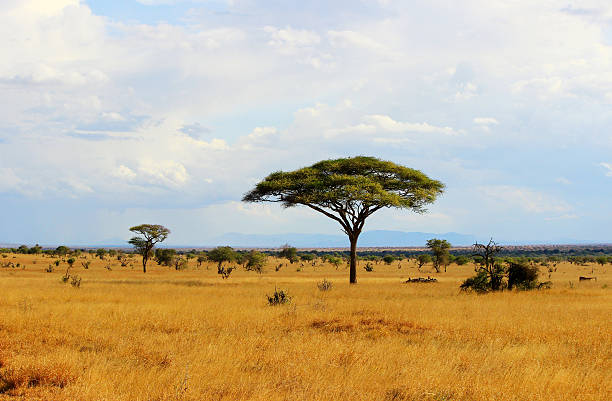
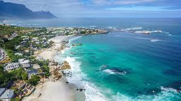
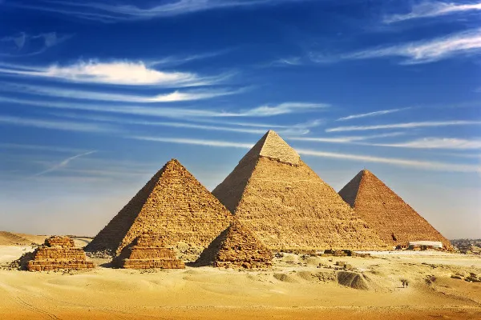
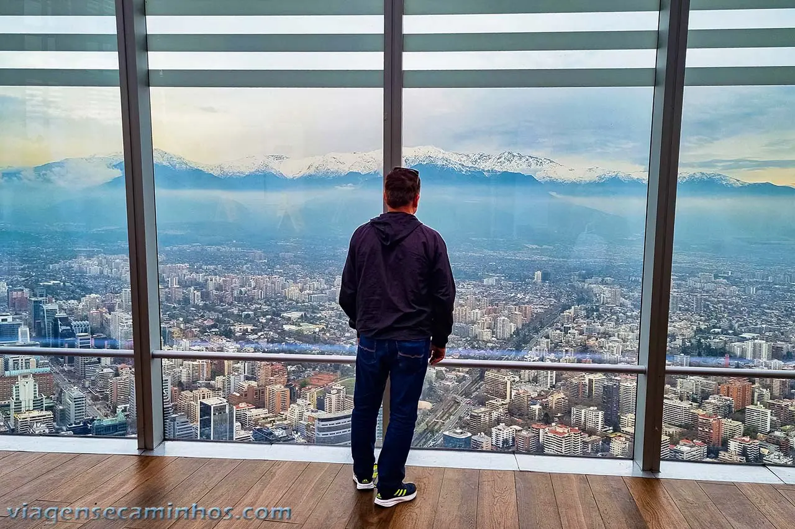

A América do Sul é um subcontinente de ~17,8 milhões de no hemisfério sul, composto por 12 países (destaque para Brasil, Argentina e Colômbia) e territórios como a Guiana Francesa, com mais de 434 milhões de habitantes. É marcada pela Floresta Amazônica, Cordilheira dos Andes, rios como o Amazonas e forte diversidade cultural/étnica.
A África é o terceiro maior continente do mundo, com cerca de 30 milhões de (20% da área terrestre) e mais de 1,3 bilhão de habitantes, sendo o berço da humanidade e composto por 54 países soberanos. Possui grande diversidade cultural, com mais de 2.000 línguas, e é caracterizada por uma população jovem, clima predominantemente quente e vastos recursos naturais, embora enfrente desafios socioeconômicos.




É o terceiro maior continente do mundo, com uma área de cerca de 30 milhões de km². A geografia é marcada por grandes desertos (Saara, Kalahari), savanas e uma das maiores bacias hidrográficas do mundo (Rio Congo), mas tem menos cadeias de montanhas jovens e altas em comparação com a América do Sul.




Possui uma característica geográfica marcante na costa oeste: a Cordilheira dos Andes, uma cadeia de montanhas jovem e alta que define o clima e a hidrografia do continente. Abriga a maior floresta tropical do mundo (Amazônia).